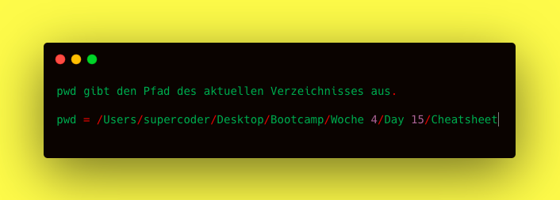

touch
Erstelle eine neue Datei
Back toHier finden Sie Befehle für die Console in Visual Studio Code!
Erstelle eine neue Datei
Back toErstelle einen neuen Ordner
 Back to
Back to
Zum navigieren in der Ordnerstruktur
Back toZeigt Ordner und Datein im aktuellen verzeichnis! -a zeigt versteckt Datein/Ordner. -l genaue Angaben Zeit/Datum
Back toZeigt dem kompletten Pfad des aktuellen Ordners bis zum Root an!
 Back toVerschiebt eine Datei entweder in einen Ordner oder benennt sie um.
Back toKopiert eine Datei/Verzeichnis Quelle nach Ziel. Dabei kann das Ziel einen neuen Namen bekommen
Back torm löscht eine Datei. rmdir löscht ein leeres Verzeichnis.
 Back to
Back to
Damit kann man Datein auslesen und es zeigt den Text der Dabei im Terminal an
Back toErstelle ganz schnell mit einer Shorthand eine SUPER Ordnerstruktur
Back to